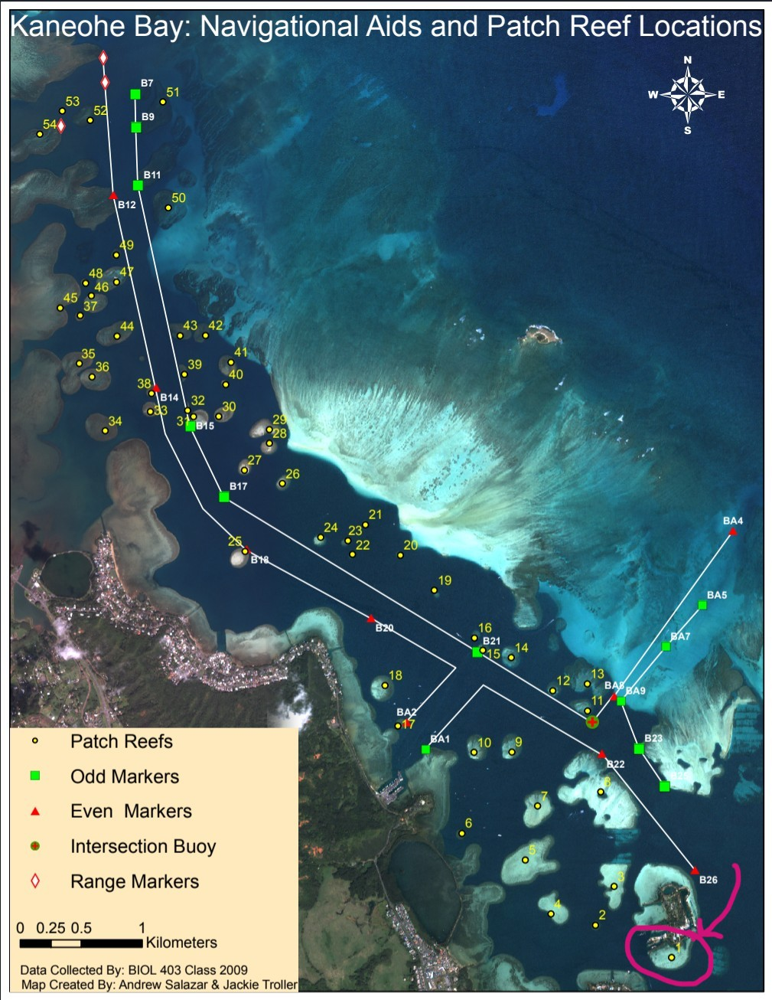
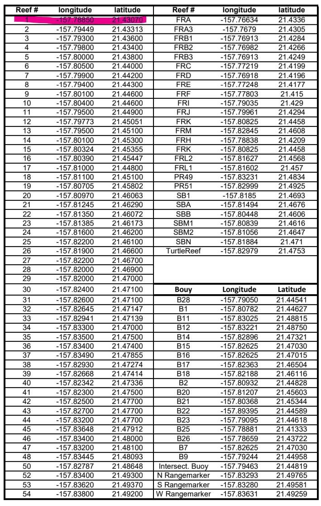
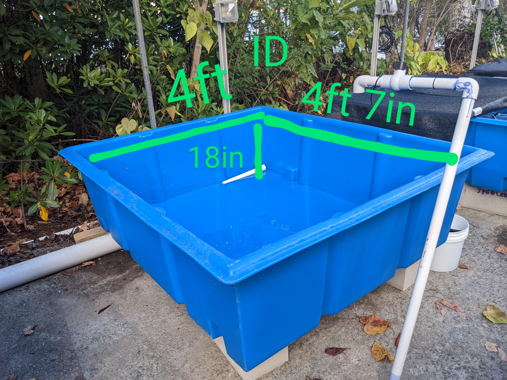

Describe the Montipora capitata coral colony collections under State of Hawai`i Special Activities Permit 2024-35 and tank acclimation prior to spawn night research activities in June & July 2024 at HIMB.
1.1 Install & load packages
## Load packageslibrary(ggplotify)
Warning: package 'ggplotify' was built under R version 4.5.2
library(tidyverse)
Warning: package 'ggplot2' was built under R version 4.5.2
Warning: package 'tibble' was built under R version 4.5.2
Warning: package 'tidyr' was built under R version 4.5.2
Warning: package 'readr' was built under R version 4.5.2
Warning: package 'purrr' was built under R version 4.5.2
Warning: package 'stringr' was built under R version 4.5.2
── Attaching core tidyverse packages ──────────────────────── tidyverse 2.0.0 ──
✔ dplyr 1.1.4 ✔ readr 2.1.6
✔ forcats 1.0.1 ✔ stringr 1.6.0
✔ ggplot2 4.0.1 ✔ tibble 3.3.1
✔ lubridate 1.9.4 ✔ tidyr 1.3.2
✔ purrr 1.2.1
── Conflicts ────────────────────────────────────────── tidyverse_conflicts() ──
✖ dplyr::filter() masks stats::filter()
✖ dplyr::lag() masks stats::lag()
ℹ Use the conflicted package (<http://conflicted.r-lib.org/>) to force all conflicts to become errors
library(leaflet)
Warning: package 'leaflet' was built under R version 4.5.2
2 Coral collection location
Lagoon snorkel entrance to fringing reef surrounding HIMB


3 Leaflet interactive map
coral_collection <-data.frame(site ='HIMB',reef =1,lat =21.431619,lon =-157.787127,collection_date =as.Date('06/30/2024', format ='%m/%d/%Y'),colony_count =20,colony_size_cm =30,permit ='SAP2024-35') # Prepare the text for the tooltip:mytext <-paste("Patch Reef: ", coral_collection$reef, "<br/>", "Collection Date: ", coral_collection$collection_date) %>%lapply(htmltools::HTML)# Generate MapKB <-leaflet(coral_collection) %>%addTiles() %>%setView( lng =-157.787347, lat =21.431229, zoom =18 ) %>%addProviderTiles("Esri.WorldImagery") %>%addCircleMarkers(~lon, ~lat, fillColor ="orange", fillOpacity =0.7, color="white", radius=8, stroke=FALSE,label = mytext,labelOptions =labelOptions( style =list("font-weight"="normal", padding ="3px 8px"), textsize ="13px", direction ="auto") )%>%# Add a visible range (e.g., 100 meters)addCircles(~lon, ~lat,radius =60, # in meterscolor ="blue", fill =FALSE, weight =2 )# Display mapKB
4 Tank acclimation

HIMB blue tank dimensions
In inches the tank dimensions are 48in W x 55in L x 18in D. The water height was variable, and determined by the level of the stand-pipe. During acclimation 30cm diameter corals were kept in water ~15in deep. Total volume of water that corals were acclimated in was therefore:
---title: "Coral collections & tank acclimation protocol"subtitle: "For spawning of Montipora capitata rice corals"author: "Sarah Tanja"date: 2024-07-09date-format: longdate-modified: todaycategories: [protocols, records]---# BackgroundDescribe the *Montipora capitata* coral colony collections under State of Hawai\`i Special Activities Permit 2024-35 and tank acclimation prior to spawn night research activities in June & July 2024 at HIMB.## Install & load packages```{r}#| message: false#| warning: false## Load packageslibrary(ggplotify)library(tidyverse)library(leaflet)```# Coral collection location# Leaflet interactive map```{r}coral_collection <-data.frame(site ='HIMB',reef =1,lat =21.431619,lon =-157.787127,collection_date =as.Date('06/30/2024', format ='%m/%d/%Y'),colony_count =20,colony_size_cm =30,permit ='SAP2024-35') # Prepare the text for the tooltip:mytext <-paste("Patch Reef: ", coral_collection$reef, "<br/>", "Collection Date: ", coral_collection$collection_date) %>%lapply(htmltools::HTML)# Generate MapKB <-leaflet(coral_collection) %>%addTiles() %>%setView( lng =-157.787347, lat =21.431229, zoom =18 ) %>%addProviderTiles("Esri.WorldImagery") %>%addCircleMarkers(~lon, ~lat, fillColor ="orange", fillOpacity =0.7, color="white", radius=8, stroke=FALSE,label = mytext,labelOptions =labelOptions( style =list("font-weight"="normal", padding ="3px 8px"), textsize ="13px", direction ="auto") )%>%# Add a visible range (e.g., 100 meters)addCircles(~lon, ~lat,radius =60, # in meterscolor ="blue", fill =FALSE, weight =2 )# Display mapKB```# Tank acclimationIn inches the tank dimensions are 48in W x 55in L x 18in D. The water height was variable, and determined by the level of the stand-pipe. During acclimation 30cm diameter corals were kept in water \~15in deep. Total volume of water that corals were acclimated in was therefore:```{r}incube <-48*15*55print(paste(incube,'inches cubed'))```1in^3^ (1 cubic inch) is equal to 0.0043290043 US gallons.The volume of water in gallons is therefore:```{r}gal <- incube*0.0043290043print(paste(gal, 'gallons'))```Finally, 1US gallon = 3.78541 liters```{r}L <- gal*3.78541print(paste(L, 'liters'))```We used [12qt(11.4L) cambro chambers](https://www.cambro.com/Products/food-storage/square-food-storage-containers/camsquares-classic-food-storage-containers/camsquares-camwear/12SFSCW135) as the individual bins for spawning.